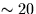

The routine sla_RVEROT corrects for the diurnal rotation of the observer around the Earth's axis. This is always less than 0.5 km/s.
No specific routine is provided to correct a radial velocity from geocentric to heliocentric, but this can easily be done by calling sla_EVP as follows (array declarations etc. omitted):
:
* Star vector, J2000
CALL sla_DCS2C(RM,DM,V)
* Earth/Sun velocity and position, J2000
CALL sla_EVP(TDB,2000D0,DVB,DPB,DVH,DPH)
* Radial velocity correction due to Earth orbit (km/s)
VCORB = -sla_DVDV(V,DVH)*149.597870D6
:
The maximum value of this correction is the Earth's orbital speed of about 30 km/s. A related routine, sla_ECOR, computes the light-time correction with respect to the Sun. It would be used when reducing observations of a rapid variable-star for instance. Note, however, that the accuracy objectives for pulsar work are beyond the scope of these SLALIB routines, and even the superior sla_EVP routine is unsuitable for arrival-time calculations of better than 25 millisecond accuracy.
To remove the intrinsic  km/s motion of the Sun relative to other stars in the solar neighbourhood, a velocity correction to a local standard of rest (LSR) is required. There are opportunities for mistakes here. There are two sorts of LSR, dynamical and kinematical, and multiple definitions exist for the latter. The dynamical LSR is a point near the Sun which is in a circular orbit around the Galactic centre; the Sun has a ``peculiar'' motion relative to the dynamical LSR. A kinematical LSR is the mean standard of rest of specified star catalogues or stellar populations, and its precise definition depends on which catalogues or populations were used and how the analysis was carried out. The Sun's motion with respect to a kinematical LSR is called the ``standard'' solar motion. Radial velocity corrections to the dynamical LSR are produced by the routine sla_RVLSRD and to the adopted kinematical LSR by sla_RVLSRK. See the individual specifications for these routines for the precise definition of the LSR in each case.
For extragalactic sources, the centre of the Galaxy can be used as a standard of rest. The radial velocity correction from the dynamical LSR to the Galactic centre can be obtained by calling sla_RVGALC. Its maximum value is 220 km/s.
For very distant sources it is appropriate to work relative to the mean motion of the Local Group. The routine for computing the radial velocity correction in this case is sla_RVLG. Note that in this case the correction is with respect to the dynamical LSR, not the Galactic centre as might be expected. This conforms to the IAU definition, and confers immunity from revisions of the Galactic rotation speed.
SLALIB --- Positional Astronomy Library